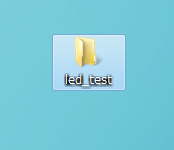
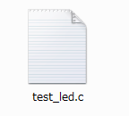
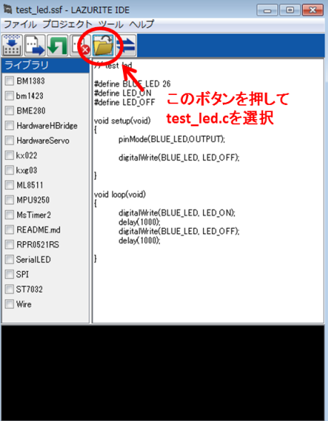
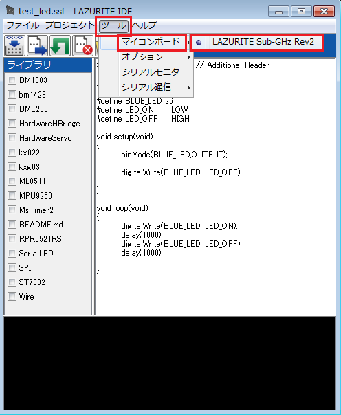
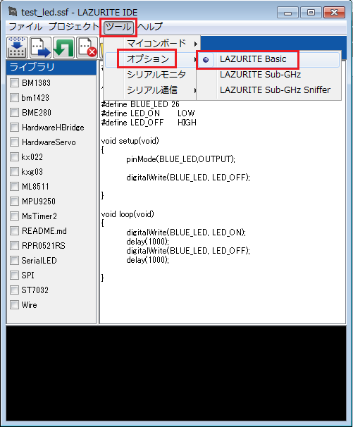
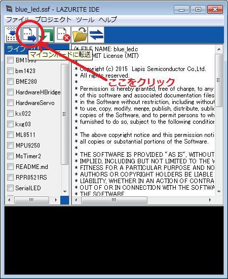

c:\lazuriteideのフォルダを開き、"LAZURITE_IDE.PREF"をテキストエディタで開いてください。
| LANGUAGE=languages/japanese.pref | 日本語環境 |
| LANGUAGE=languages/english.pref | 英語環境 |
Windowsのプログラムメニューから、Lazurite IDEを起動して下さい。
ここでは、LEDを1秒間隔でON/OFFをするプログラムを作成しながら、
Lazurite IDEの使用方法を説明します。
なお、Lazurite
IDEはArduinoと異なりテキストエディタの機能を搭載していません。
テキストエディタは用意して頂けるようお願いします。なお、ここではサクラエディタを使用しています。
また、以下で作成する手順は、C:\LazuriteIDE\examples\blue_led\blue_led.cを、
led_test.cとしてデスクトップにプロジェクトを作成しています。
3-1. プロジェクト用のフォルダを作成
デスクトップにプロジェクトのフォルダを作成します。
後々、LazuriteIDEが複数のファイルを作成するため、
プロジェクト専用のフォルダを作成してその中で作業をしたほうが便利です。

3-2. C言語のファイルを作成
テキストエディタを起動し、以下の様にsetupとloopの関数を記載して保存します。
ファイル名は test_led.cとします。（↑保存時に拡張子が.txtとなっていたら.cに変更してください。）
このファイルを保存しました。

次のようにコードを書いていき、保存します。
3-3.Lazurite IDEを起動
プログラムメニューからLazurite IDEを起動してください。
3-4. USBケーブルでPCとLazurite Sub-GHzを接続してください。
3-5. Lazurite IDEのメニューでCOMポートを設定してください。

3-6. プロジェクトファイルを開く
開くボタンを押して、先ほど作成したtest_led.cを選択します。
開くと以下のような画面になります。
その時、プロジェクトにはtest_led.ssfというファイルができます。

3-7. プロジェクトの設定を行います。
「ツール」メニューから「マイコンボード」を選択し「Lazurite Sub-GHz」を選択してください。

続いて「ツール」メニューから「オプション」を選択し「Lazurite Basic」を選択してください。

※「Lazurite Sub-GHz」は、920MHzによる送信／受信をするためのオプションで「Lazurite Basic」はそれを含まないオプションです。
今回はLEDのON/OFFのみなので、「Lazurite Basic」を選択します。
3-8. ビルドしてマイコンボードに書き込む
「マイコンボードに転送」ボタンを押します。エラーが出たら解析が必要です。

コンソール画面にテキストメッセージが流れ、test_led.cのプログラムをML620Q504用が読める
プログラムに変換（コンパイル）します。
正常にコンパイルが完了すると
convert success
start upload
というメッセージが表示され、ボードのオレンジ色のLEDが点灯します。
この状態は、マイコンボードがプログラムを受信するモードに入ったことを示しています。
続いて、ML620Q504が内蔵しているFlashメモリにPCから送信されたプログラムを書込みします。
書き込み中は青色LEDがONします。
しばらくすると、オレンジ色のLEDが消灯し、青色LEDが1秒間隔でONします。

これで、作成したプログラムが正常にマイコンボードで動作しているという事です。
3-9. Lazurite IDEによって作成されるファイル
|
test_led.c |
プロジェクトのソースファイルです。 |
|
test_led.ssf |
使用しているプロジェクト、オプション、使用するライブラリ等が記載されているファイルです。 |
|
_prn |
コンパイル時に作成される中間ファイルです。 |
|
obj |
コンパイル時に作成される中間ファイルです。 |
|
test_led.abs |
ML620Q504のデバッカが使用するファイルです。 |
|
test_led.bin |
Binary形式のML620Q504用プログラムファイルです。 |
|
test_led.hex |
INTEL HEX方式のML620Q504用プログラムファイルです。 |
|
test_led.map |
U16のコンパイラが作成するMAPファイルです。ROM/RAMの使用状況などが、テキスト形式で保存されています。 |
|
test_led_led_.c |
作成したプログラムの最後にアンダーバーが付与されたファイルです。 |
test_led.cとtest_led.ssf以外のファイルを消去してもまったく同じ条件が再現できるので問題ありません。